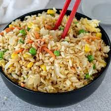

The Ultimate Fried Rice Recipe

An image of deliciously cooked fried rice
This recipe will teach you how to make the ultimate bowl, the fried rice bowl.
have it your way in any type of style you want, be it chicken, beef, vegetables, or whatever you prefer.
The choice is yours, take your imagination to the sky
Ingrediants:
- Rice (day old preffered)
- Vegetable oil
- Eggs
- Soy Sauce
- Worschester Sauce
- Meat and veggies of your choosing
- If there is meat, cook the meat slightly beforehand. The same goes for vegetables. We're aiming for slightly undercooked
- Coat your Wok (very important) with vegetable oil. Make sure the heat is turned on high.
- Add your egg and make it scrambled
- Without letting too much time pass, quickly add the rice and begin mixing
- Add the soysauce along with the Worschester. A decent amount of soy sauce and a small amount of Worschester should be added
- Mix well, and finally add your meat and/or vegetables.
- Mix well, and cook for a minute for doneness to the meat/vegies